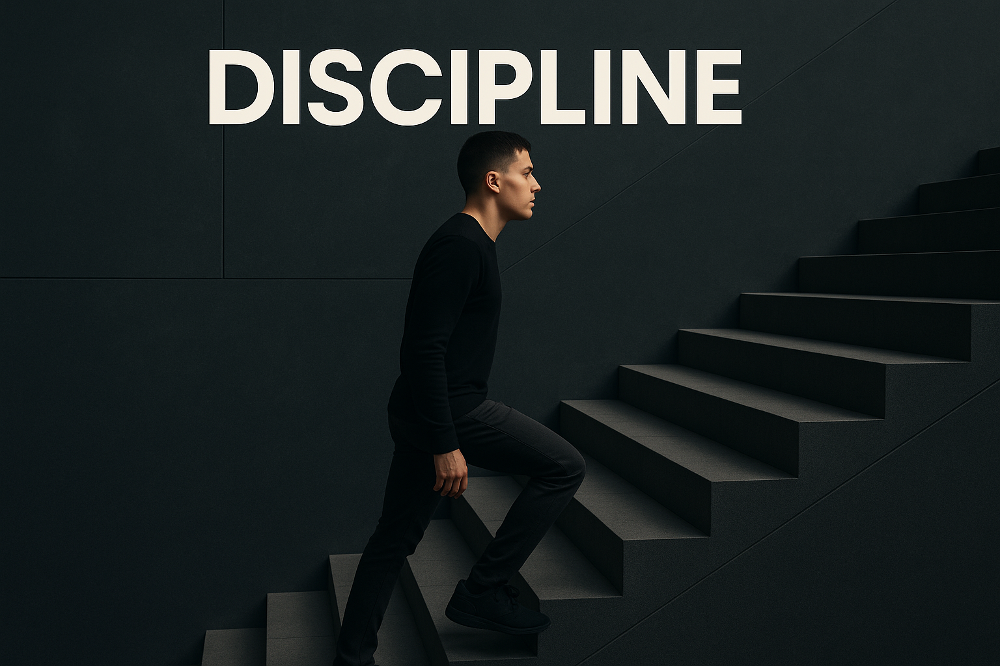
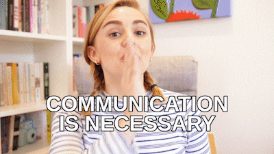

① Discipline, Communication
& Teamwork

Discipline (Disiplin)
▸ Apakah pengertian Discipline?
Sentiasa mematuhi setiap peraturan-peraturan yang telah
ditetapkan di dalam syarikat.
▸ Antara peraturan discipline yang perlu dipatuhi:
 Memakai pakaian yang telah ditetapkan didalam premis kerja.
Memakai pakaian yang telah ditetapkan didalam premis kerja.
 Sentiasa menepati waktu bekerja.
Sentiasa menepati waktu bekerja.
 Hormat SOP/WIS.
Hormat SOP/WIS.
 Sentiasa melakukan pemeriksaan pada Zone A, Zone B & Zone C.
Sentiasa melakukan pemeriksaan pada Zone A, Zone B & Zone C.
Communication (Komunikasi)
▸ Apakah pengertian Communication?
Apabila berlaku abnormal segera
maklumkan kepada T/L atau Supervisor.
▸ Antara perkara communication yang perlu dilakukan:
Tidak dapat hadir bekerja.
Abnormal berlaku terhadap pemasangan/pemeriksaan.
Teamwork (Kerja Berpasukan)
▸ Apakah pengertian Teamwork?
Sentiasa bekerjasama dalam 1 kumpulan.
▸ Bagi memenuhi keperluan teamwork:
Seorang pekerja perlu mengetahui
3 proses kerja dalam 1 kumpulan.
Satu mesin perlu 3 orang
pekerja yang boleh menjalankan aktiviti kerja di situ.
▸ Kenapa?
Sekiranya ada sahabat yang tidak hadir maka kita boleh menggantikan tempat yang kosong didalam kumpulan kerja.
⭐ Discipline, Communication dan Teamwork yang tinggi akan menghasilkan 5s yang baik. ⭐
① Discipline
Discipline yang tinggi akan dapat menjamin persekitaran kerja/carakerja yang baik.
② Communication
Communication yang baik antara sahabat dengan superior akan membentuk kumpulan yang baik.
③ Teamwork
Teamwork yang baik akan menghasilkan tempat kerja yang bersih dan selamat seterusnya menghasilkan produk berkualiti.